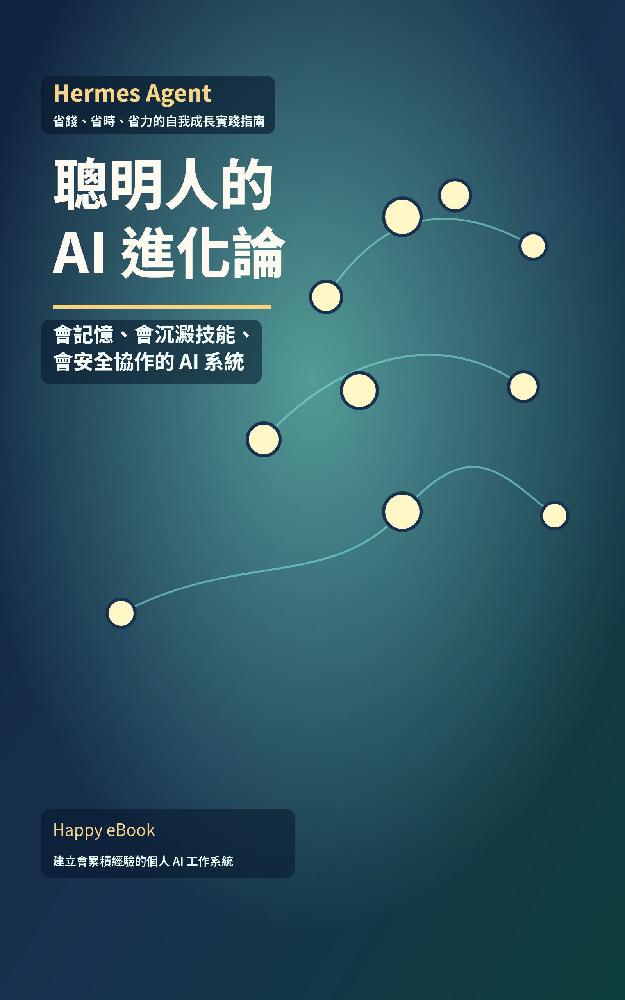

適合誰
適合學生、教師、自學者、內容創作者，以及想把 AI 放進日常工作流程的人。重點不是追工具名稱，而是建立可檢查、可重複、可累積的學習方法。
建議順序
- 1. AI 基礎先理解生成式 AI 的能力、限制與資料判斷。
- 2. Prompt 工作流練習描述需求、拆任務、檢查輸出與修正方向。
- 3. Codex 實作用小專案練習讓 AI 協助寫程式，但保留人工驗收。
- 4. AI Agent 與出版把 AI 用在專案、教材、電子書與可維護工作流。
適合學生、教師、自學者、內容創作者，以及想把 AI 放進日常工作流程的人。重點不是追工具名稱，而是建立可檢查、可重複、可累積的學習方法。